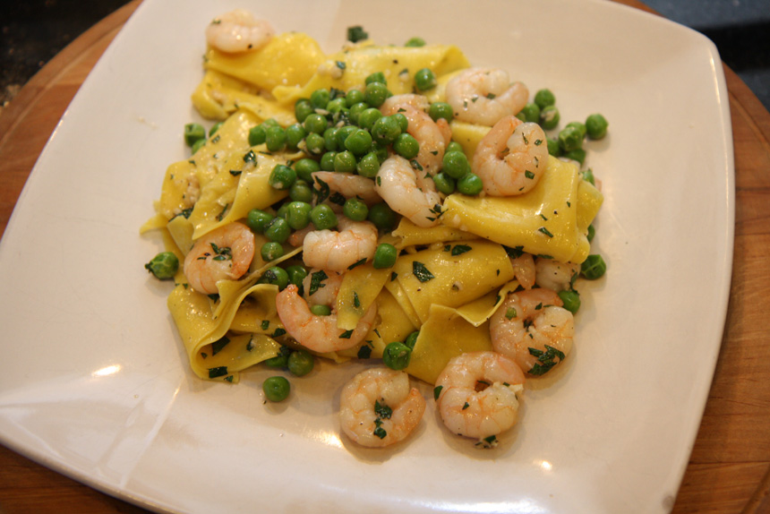

Back to Main Recipe Index
Garlic Shrimp with Three Cheese Tortellini

Description:
This recipe combines the flavors of garlic and shrimp together that gets elevated with pesto sauce. This combination of flavors lends great to being paired with 3 cheese tortellini for an even greater explosion of flavor madness!
Submitted by: BUITONI
Prep Time: 5 minutes
Cook Time: 10 minutes
Total Time: 15 minutes
Servings: 2
Ingredients
These are the ingredients that will be needed for this recipe:
- 1 (9 ounce) package BUITONI Refigerated Three Cheese Tortellini
- 6 raw large shrimp, peeled and deveined
- 2 tablespoons extra virgin olive oil
- 2 teaspoons finely chopped garlic
- 1/2 cup BUITONI Refrigerated All Natural Pesto with Basil
- 1/2 cup chopped sun-dried tomatoes
- 2 tablespoons chopped fresh basil
- 2 tablespoons BUITONI Refrigerated Freshly Shredded Parmasean Cheese
Cooking Directions
Follow these steps to make this delicious food:
- Prepare pasta according to package directions.
- Heat a large skillet over medium-high heat; cook shrimp, oil and garlic, stirring frequently, until shrimp turn pink. Remove from heat.
- Toss pasta with pesto. Add sun-dried tomatoes and basil; toss well. Top with shrimp and cheese.
Back to Main Recipe Index